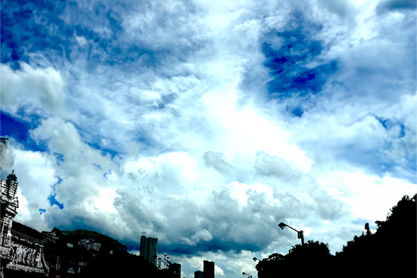

空の鼓動
概要
日常のふとした瞬間を撮った一枚です。
制作期間
制作時期:2023年11月
制作時間:半日
使用ツール・使用言語:Adobe Photoshop 2024
作品説明
この作品は、日常の一コマを捉えた写真から雷雲のように雲が立ち上っている様子を表現しました。
元の写真の面影を残しつつ多少加工を施すことで空が活気に満ち、力強い鼓動を奏でているかのような印象を与えました。
この作品は自然の美しさと力強さを表すと同時に、人間の小ささと自然の偉大さを感じる作品になります。